右膝 人口関節手術20日目右足の回復について
足に関しては腫れがなかなか引かず痛みも伴いまともに歩くことは出来ませんでした。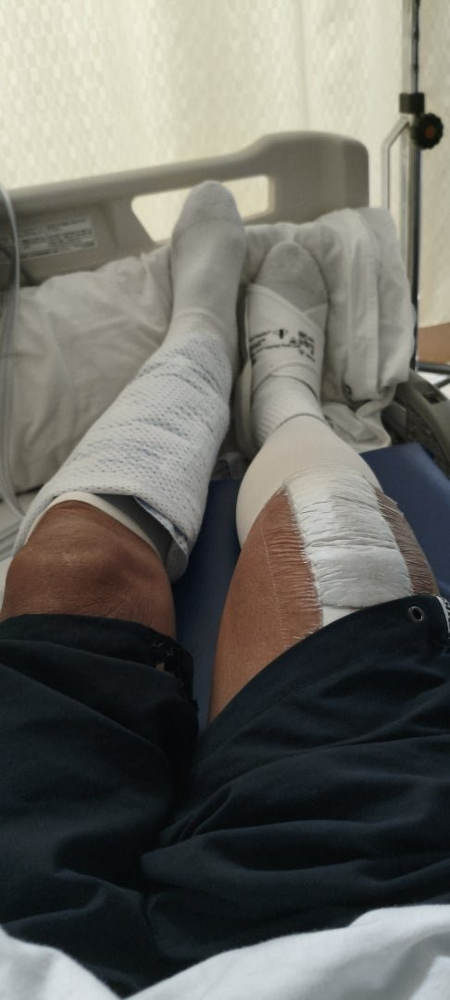
左足と比べて1.5倍は腫れてました。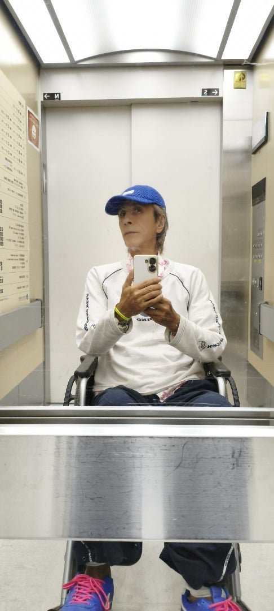
院内の移動は基本車椅子でエレベーターも連絡通路もコンビニも車椅子を使いました。操作は慣れましたが、トイレは車椅子用が無いとあきまへん。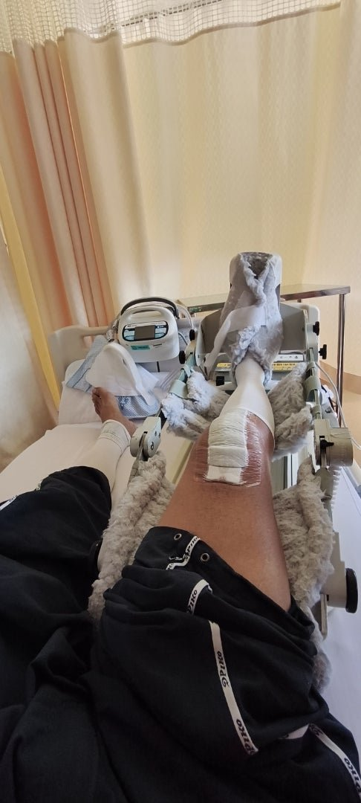
歩けないので曲げ伸ばしは大切。固まってしまうので毎日1時間角度を次第に大きくしながらゆっくりと膝の曲げ伸ばし運動です。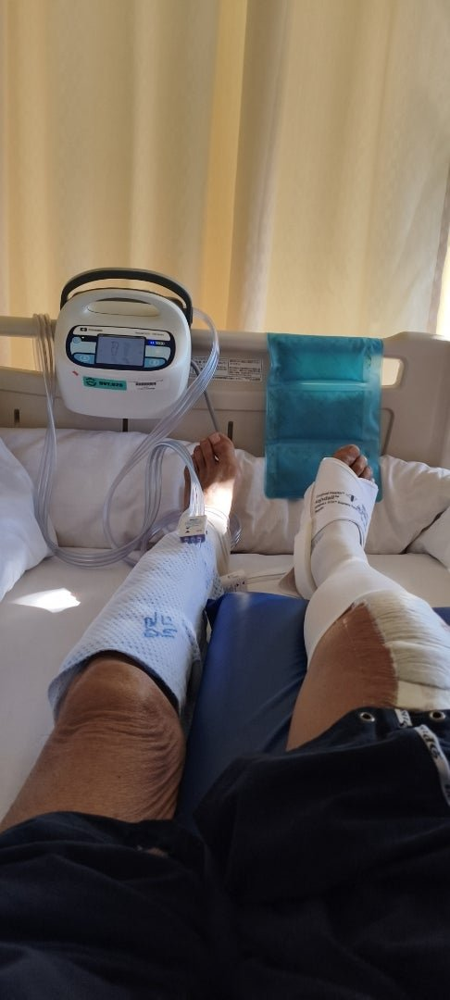
血栓防止のポンプも24時間。ベッドの上にいる時は自分でセットしました。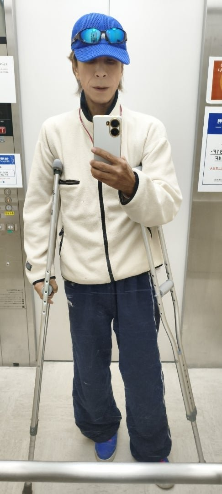
リハビリセンターの先生に松葉杖を渡されたのは手術から10日目の事本来なら14日で退院でしたが予想に反して退院延期となりました。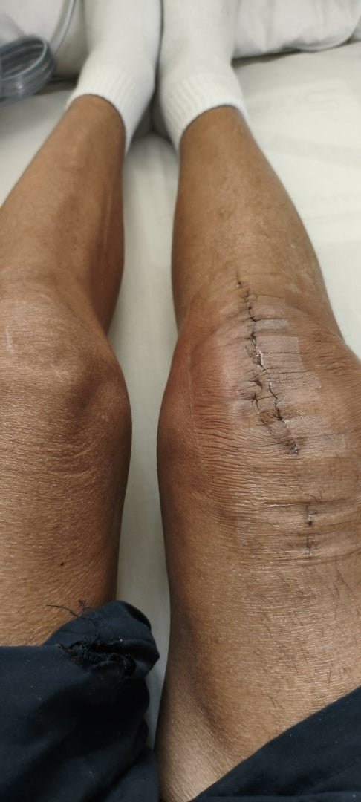
ヒザのテープが取れました。パンパンに腫れてます。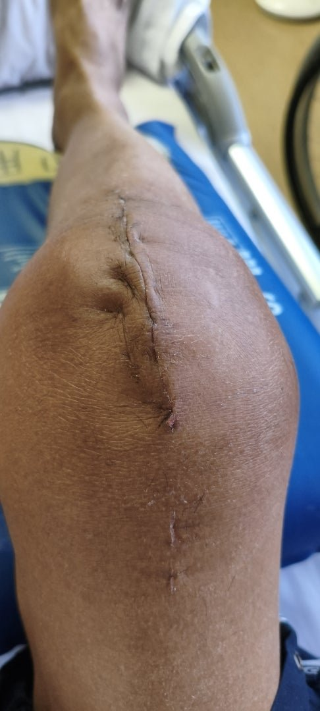
炙りチャーシューみたいですね？
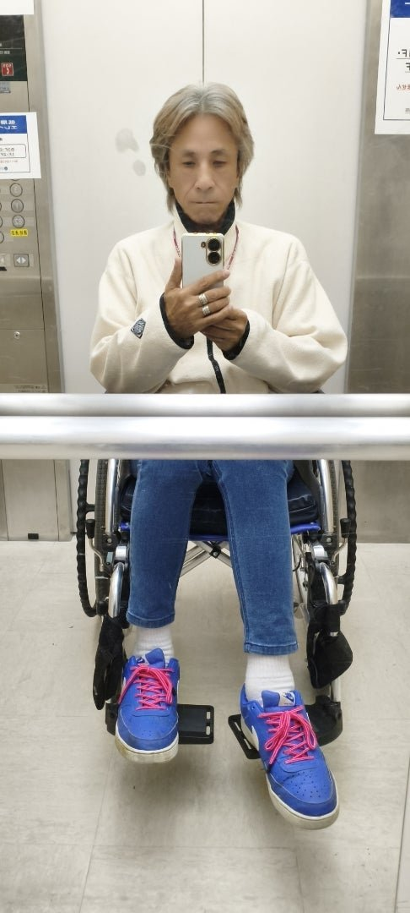
松葉杖は近場の移動車椅子は遠目の移動と使い分けて併用する日が続きます。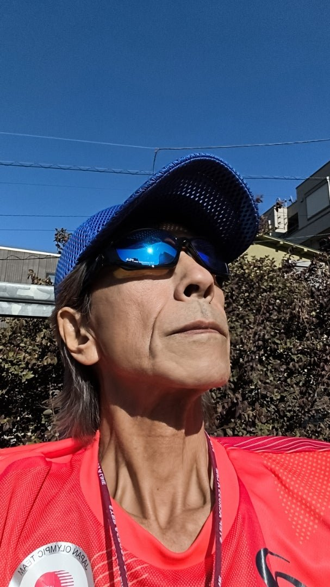
中庭で光合成を島す。日焼けしてます。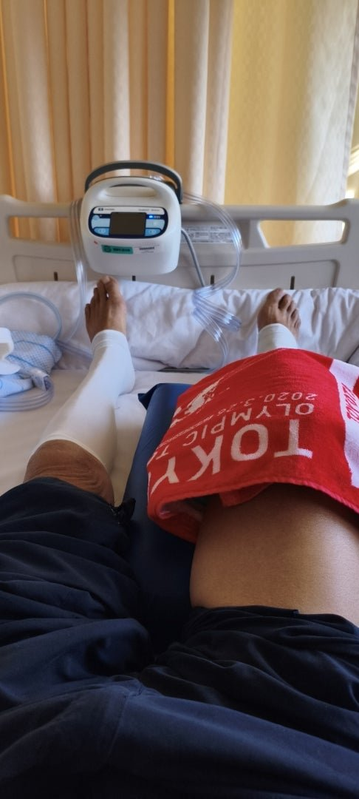
歩行訓練を頑張ったらアイシングです。
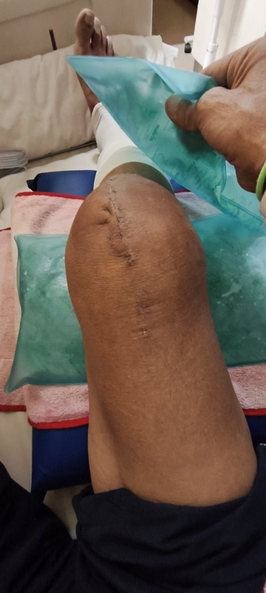
アイスノンが直ぐにヌルくなるほど熱を持っています。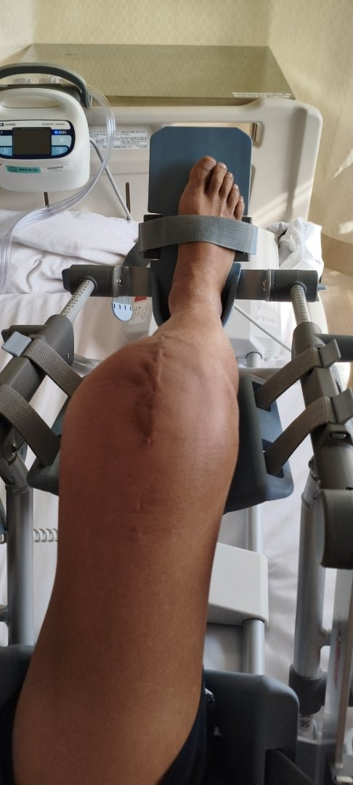
そしてまた曲げ伸ばし運動です。
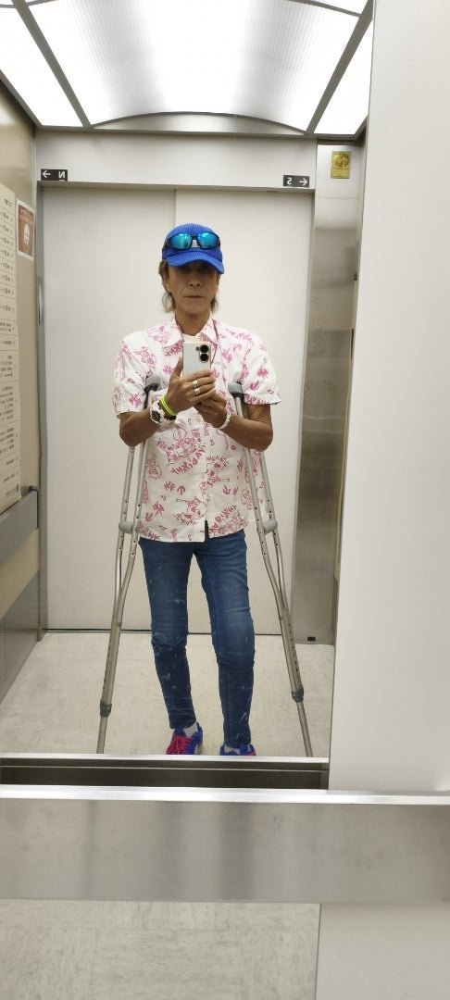
警備のおじさん達や受付の綺麗なお姉様にも顔見知りとなり毎朝挨拶したり冗談を言っています。
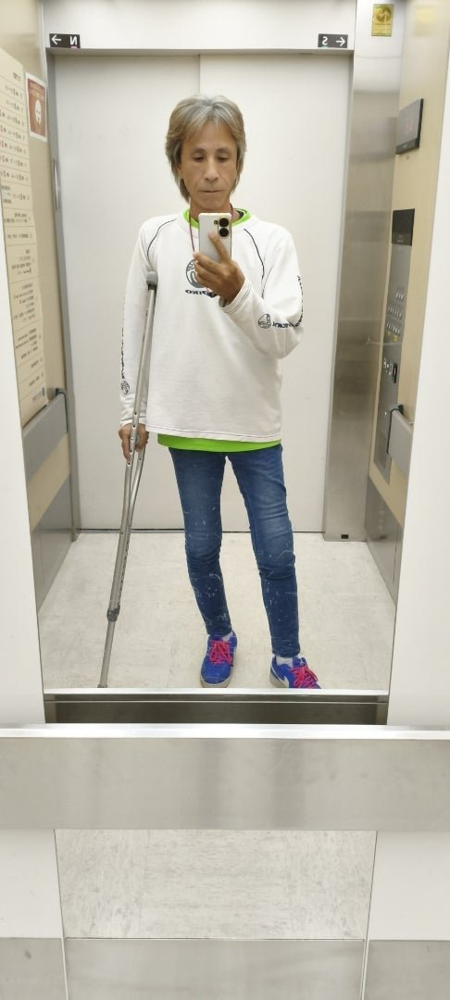
一昨日から片手松葉杖を練習しています😊リハビリ先生のマッサージやアドバイスありがとうございました。
歩けなかった足が動くようになり右足にも次第に体重をかけられるようになりました。完全に右足で立つことはまだ出来ません。13日金曜日はこの状態で羽田に向かうことになります。Twitterの、相互フォローのお友だちが羽田まで送ってくれます。プロのドライバーさんです。日曜日面会に来てくれました。差し入れやお見舞いも頂き感謝です😊🎵金曜日は羽田までよろしくお願い申し上げます🙇
※ この記事はアメブロからの移行記事です（原文はこちら）